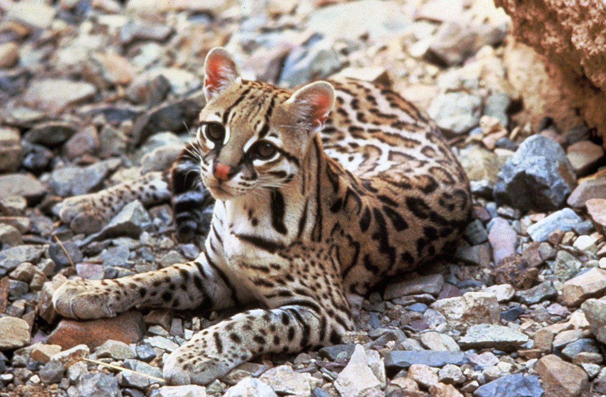
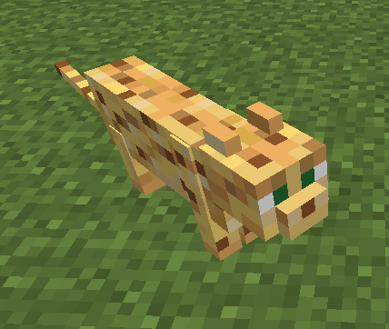

L'ocelot est un mammifère carnivore de la famille des Félidés. Il est endémique de l'Afrique du Sud et de l'Asie du Sud-Est. Il vit en Amérique du Nord et en Asie du Sud-Est. Il est considéré comme un animal domestiqué aux États-Unis.
L'ocelot est un animal très intelligent et capable de s'adapter à n'importe quel environnement. Il a une excellente vision nocturne et peut être utilisé pour la recherche de nourriture. Il est également capable de s'adapter à n'importe quel environnement et de travailler en groupe. Il est également capable de se déplacer rapidement.
L'ocelot est également connu pour son ajout dans Minecraft lors de la version 1.2.1 en 2012, il s'agit de l'un des deux félins avec le chat qui a été rajouter dans le jeu. l'ocelot est également connu grace à Salvator Dali qui avait son propre ocelot domestique nommé babou.
